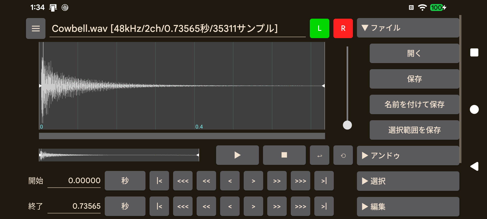

メイン画面
アプリを起動するとメイン画面（編集画面）が開きます。画面は端末の向きに合わせて縦向き・横向きに自動で切り替わります。

画面の構成
メイン画面は次の 5 つの領域で構成されています。
| 領域 | 役割 | 詳細ページ |
|---|---|---|
| 1. 上部バー | メインメニュー（≡）、データファイル名・音声情報、L / R スイッチ | このページの下部 |
| 2. 波形ビュー | 音声波形の詳細表示、拡大・スクロール、選択範囲の指定 | 波形ビュー |
| 3. 再生ビュー | 音声全体の俯瞰表示、シーク、再生・停止・巻き戻し・リピート | 再生ビュー |
| 4. 開始位置・終了位置の操作ボタン群 | 開始位置・終了位置の数値入力と細かなステップ移動 | 開始位置・終了位置の操作ボタン群 |
| 5. コマンドボタン部 | 折り畳みグループに分かれた各種編集コマンドの実行 | コマンドボタン部 |
横向き画面では、右端（幅 200dp）にコマンドボタン部が縦に並び、左側に上部バー・波形ビュー・再生ビュー・開始位置／終了位置操作ボタン群が配置されます。
上部バーの詳細
メインメニュー（≡）
画面左上の三本線ボタン（≡）を押すとメニューが開きます。音声データを開いていない状態でも利用できます。
- 設定：設定画面 を開きます（再生中の場合は停止します）。
- mase について：アプリ名、バージョン、著作権表示、アプリのライセンス（Apache License Version 2.0）、配布元 URL、NOTICE URL、使用しているライブラリ（LAME 3.100、LGPL v2）の情報を表示します。各 URL はタップして外部アプリ／ブラウザーで開け、ライセンスを表示 からライセンス全文を確認できます。
データファイル名と音声情報
メニューボタンの右に、現在開いているファイルの名前と音声情報が表示されます。
- 未読み込み時：
（音声データを開いていません） - 保存済み：
voice.wav [48kHz/2ch/4.00000秒/192000サンプル] - 未保存の編集あり：先頭に
*が付きます（例：* voice.wav [48kHz/2ch/4.00000秒/192000サンプル]）
ファイル名が画面幅に収まらないときは、文字を省略せず表示します。指で左右にスクロールして全体を確認できます（編集はできません）。
L / R チャンネルスイッチ
ファイル名の右端には L R の 2 つのトグルスイッチがあります。ステレオ音声を開いているときだけ操作できます（モノラル時・未読み込み時は無効になります）。
2 つのスイッチは、常に「どちらか一方、または両方がオン」の状態を保ちます。片方だけがオンのときにそのオン側のスイッチを押すと、もう一方へ切り替わります。
| 現在の状態 | L を押す | R を押す |
|---|---|---|
| L=オン、R=オン | L=オフ、R=オン | L=オン、R=オフ |
| L=オン、R=オフ | L=オフ、R=オン（入れ替え） | L=オン、R=オン |
| L=オフ、R=オン | L=オン、R=オン | L=オン、R=オフ（入れ替え） |
オンになっているスイッチは、波形ビューの「ステレオの L だけの部分」「ステレオの R だけの部分」と同じ色で表示されます（設定画面で色を変えると連動します）。スイッチの状態はアプリ終了まで保持されます。
L / R スイッチには次の 4 つの働きがあります：
- 波形ビューの表示：片方だけオンのときは、波形ビューにそのチャンネルだけを表示します（再生ビューは常に両方表示します）。
- 再生出力の切り替え：オンのチャンネルだけを鳴らし、オフのチャンネルを無音にします。再生中に切り替えるとリアルタイムに反映されます。
- 加工対象の絞り込み：音声データの長さが変わらない加工（貼り付け・音量の変更・音量の最大化・無音化・フェードイン／フェードアウト・位相反転・逆再生・音のミックス・再生時間維持の音程変更）で、オフのチャンネルを元のまま残します。
※「チャンネル入れ替え」はスイッチに関係なく常に L と R を入れ替えます。長さが変わる加工やコピー等も全チャンネル対象です。 - 無音・発音区間の判定：「無音区間を選択」「発音区間を選択」で、オンのチャンネルだけを見て無音判定を行います。
画面の回転とライト／ダークモード
- 画面の回転：回転しても音声データ、選択範囲、再生、履歴、コピーバッファ、表示中のダイアログはそのまま維持されます。
- ライト／ダークモード：端末の設定に合わせて UI の配色が自動で切り替わります。波形ビューと再生ビューの中身の色は、端末のモードに関わらず設定画面の配色で描画されます。
アプリの終了
未保存の編集がある状態で戻るボタンを押すと、確認ダイアログが表示されます。
- 保存して終了：「保存」を実行し、正常に保存できたときだけ終了します。
- 保存しないで終了：変更を破棄して終了します。
- キャンセル：終了を取りやめて編集画面に戻ります。
注意：アプリを終了すると、編集中の音声データ・アンドゥ履歴・コピーバッファは破棄されます。タスクキルや OS による強制終了時は確認ダイアログは出ず、未保存のデータは失われます。